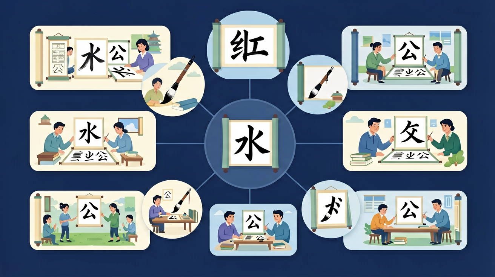

🌍 And（已知）：我们已经有了一定的基础知识
⚡ But（问题）：但还有一个重要概念需要深入理解
💡 Therefore（新知）：因此通过本节课的学习，我们将掌握新知识并能灵活运用

❓ 为什么‘口’字要先写竖再写横折？
❓ ‘水’字的第二笔为什么是横撇不是撇捺？
❓ 写‘火’字时怎么记住四个笔画的顺序？
学完这一课，这些问题你都能自信地回答。
And：学生已经会写一些简单的汉字
But：但不知道笔画顺序的规则
Therefore：本模块帮助学生掌握基本笔画
汉字由基本笔画组成，比如横（一）、竖（丨）、撇（丿）、捺（㇏）。写汉字时要按照一定顺序，比如“十”字，先写横，再写竖。再比如“人”字，先写撇，再写捺。记住：横平竖直，撇捺舒展。
🌍 就像搭积木，先放哪块后放哪块很重要。写“木”字时，先写横，再写竖，然后撇捺，就像先搭底座再往上建。
“大”字的正确笔画顺序是？
分别用正确和错误笔顺写'永'字各5遍
And：学生知道基本笔画
But：但复杂字笔顺容易错
Therefore：本模块学习笔顺规则
笔顺有四大规则：1.先横后竖（如“十”），2.先撇后捺（如“八”），3.从上到下（如“三”），4.从左到右（如“明”）。比如“林”字，先写左边的“木”（横竖撇捺），再写右边的“木”，最后写中间的点。
🌍 就像吃蛋糕，先切块再吃。写“休”字时，先写左边的“亻”，再写右边的“木”，就像先拿盘子再吃蛋糕。
“明”字的正确笔顺是？
And：学生掌握基本规则
But：但遇到特殊字会写错
Therefore：本模块学习特殊笔顺
有些字有特殊笔顺：1.先中间后两边（如“小”：竖钩、左点、右点），2.先外后里（如“同”：外框、里面横竖），3.带“辶”的字最后写（如“这”：先写“文”，再写“辶”）。比如“火”字，先写两点，再写撇捺。
🌍 就像穿衣服，先穿内衣再穿外套。写“国”字时，先写外框“囗”，再写里面的“玉”，就像先穿T恤再穿外套。
“心”字的第三笔是？
把‘树’字拆成木+又+寸，观察各部分笔顺
‘先中间后两边’规则适用于‘小’‘水’等对称字
对比‘王’和‘玉’最后一笔的不同
用动画展示‘方’字横折钩的运笔路线
用‘先撇后捺’规则写‘人’‘八’等新字
先独立作答，再点选项查看对错与错因。
写'十'字时，正确的笔顺是
下列哪个字的笔顺规则与其他不同？
写'水'字时，第三笔是
写'三'字时要遵循____的笔顺规则
答案：从上到下
多横组合的字要从上往下写
'永'字的第5笔是____
答案：横折钩
完整笔顺：点、横折钩、横撇、撇、捺
And：学生知道规则
But：但常写错“方”“万”等字
Therefore：本模块专攻易错字
这些字最容易错：1.“方”：点、横、横折钩、撇（共4笔），2.“万”：横、横折钩、撇（共3笔），3.“里”：竖、横折、横、横、竖、横、横（共7笔）。比如“女”字，不是画圈，而是撇点、撇、横（共3笔）。
🌍 就像跳舞，动作顺序不能乱。写“妈”字时，先写“女”再写“马”，就像先伸手再转圈。
“方”字的第二笔是？
✅ 正确应‘曰’写完接竖横横
💡 受‘田’字笔顺干扰
✅ 竖折+竖+竖+竖折+竖
💡 字形拆分错误
口诀：横竖交叉先写横，撇捺相遇捺后行
类比：就像搭积木，先搭底座再往上垒
回忆：今天学了哪些关键词和规则？试着说出来。
用自己的话解释今天学的核心概念，不看书能说清楚吗？
用今天的知识解决一个实际问题，或写一个新例子。
把今天的知识与已有知识联系起来：有什么共同点？有什么区别？能不能自己创造一道新题？